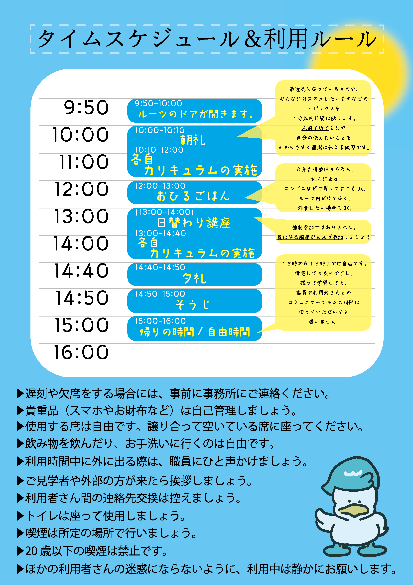

就労移行ITスクールへようこそ
詳細のご説明を致します。最初はスタッフとご一緒に ご確認くださいませ。
作業中、お困りのことがありましたら、
リーフレットからLINEに登録して、呼びかけて頂いても大丈夫です。
途中、躓いたり、疲れたりしたら
『LINE』から遠慮なく話かけて下さいね。
直接、スタッフカウンターに問いかけて頂いてもOKです。
作業中、動画を見ることもありますので、イヤホンがあると良いと思います。
■ 前半知識の確認 ■
No.1 タイピングの確認をしてみましょう♪
※ここで、得点をメモしておいてください
※文字が小さい場合は画面右上の：設定でズームを操作してみてください。
No.2 インターネットの基礎知識を少し簡単に解説しています。総務省のWebです。
いったん休憩しましょう🌸
※肩を回すなどの体操をして頂くのも良いと思います。
背伸びなどをして深呼吸も試してみてください。
就労移行ITスクールの利用ルールも確認して
みなさんで心地よく過ごしましょう＾＾

■ MOSテキスト ■
MOSテキスト
■ HTMLとCSS ■
まずは制作物のイメージを作りましょう
ここでは、メモ帳などのエディターを使用して練習します。
※テキストエディタとは、具体的にはWindowsならメモ帳、
Macならテキストエディットなどのアプリケーションを指します。
これらのアプリケーションはOSに最初から付属しているので、WindowsやMacの
パソコンをお持ちの方ならすぐにでもウェブ制作を始めることができます。
【準備①】mac OSに標準で搭載される「テキストエディット」開き方
⇒ 体験では Windows を使いますが、MACを使った場合参考にしてください♡
【準備②】このようなサイトを作ってみましょう（サンプル）
【実践①】ここの説明にそって試してみましょう！＜次へ＞で読み進めてください。
※作成したファイルをクリックしたら・・・
画面左上に「ウェブサンプル株式会社」と表示されましたか？
引き続き、＜次へ＞でチュートリアルを進んでください。
【実践②】HTMLの基本：HTMLとは？ ＜次へ＞で読み進めてください。
【実践③】ウェブ制作チュートリアル ＜次へ＞で読み進めてください。
■ プログラミングで人生の可能性を広げよう ■
No.1 プロゲート
No.2 CodeStep(模写学習用)
No.3 ドットインストール
ここから、先は一旦スタッフと進みましょう♪
躓いたら調べてみましょう
「サルワカ」
「鬼練」
■ IT関連の資格 ■
ITパスポート＜iパス＞（国家試験）
マイクロソフト オフィス スペシャリスト（MOS）
少しステップアップ☆
Excelの神髄
■ Adobe練習 ■
Illustrator・Photoshop・PremierePro・AfterEffects練習用動画
今後のご利用に際し、クラウドによるファイル保存・科目によってはイヤホンや
ヘッドホンがあると便利です。
本日はお疲れさまでした。
忘れずにログアウトとデスクトップ上に
保存したファイルなどがあれば削除してください。
就労までの道のりをこころより応援いたします

MESSAGE | from 就労移行ITスクール
〒221-0834
神奈川県横浜市神奈川区台町14-15 栄ビル3F
E-mail ：info-sales@fastmotion.biz
TEL ：045-534-9893
FAX ：045-534-9894
HP ：https://snabi.jp/facility/22586
：https://www.xn--fdk7cd2e.com/
Instagram：https://www.instagram.com/rootsyokohamanishi/
------------------------------------------------------------------------